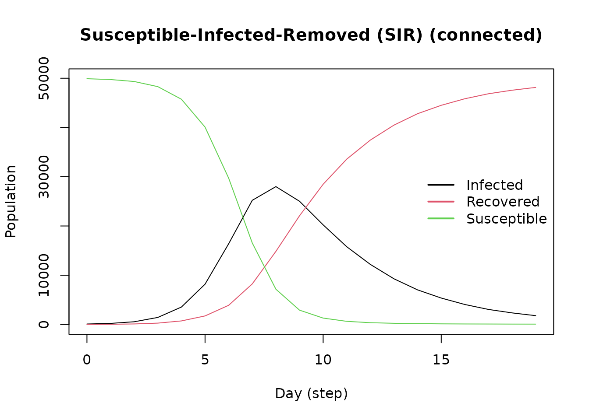
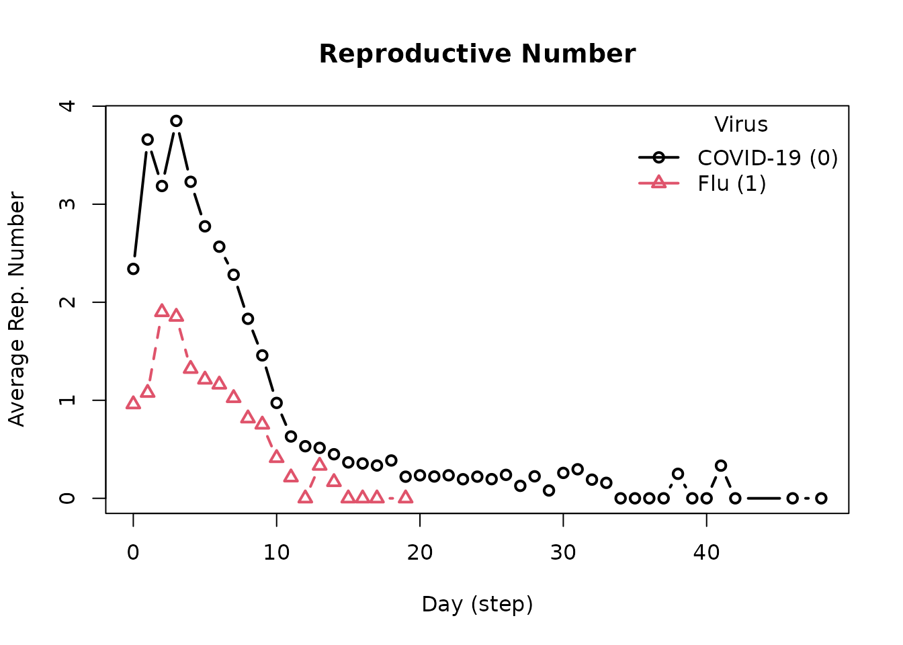

Advanced Modeling - Multiple Diseases, Tools, and Events
Andrew Pulsipher
2025-07-21
Source:vignettes/advanced-modeling.Rmd
advanced-modeling.RmdIntroduction
epiworldR models can have multiple viruses, tools, and
events. This vignette walks through an example of an advanced model with
multiple interacting pieces.
Example Scenario: Simultaneous COVID-19 and Flu Outbreaks
The example implements the following scenario:
- Diseases: COVID-19 and Flu
- Population size: 50,000 agents
- Contact Rate: 4
- Recovery Rate: (same for both diseases)
-
COVID-19 Parameters
- Initial Prevalence: 0.001
- Transmission Rate: 0.5
-
Flu Parameters
- Initial Prevalence: 0.001
- Transmission Rate: 0.35
We’ll go through the process step-by-step. After each step, we’ll run the model for 50 days and plot it to illustrate how each added component changes the base model.
Model Setup
We start with a ModelSIRCONN model for COVID-19. We’ll
add the flu virus and our tools and events to this base model.
library(epiworldR)
#> Thank you for using epiworldR! Please consider citing it in your work.
#> You can find the citation information by running
#> citation("epiworldR")
model_sirconn <- ModelSIRCONN(
name = "COVID-19",
n = 50000,
contact_rate = 4,
recovery_rate = 1 / 4,
prevalence = 0.001,
transmission_rate = 0.5
)
verbose_off(model_sirconn)
run(model_sirconn, ndays = 50, seed = 1912)
plot(model_sirconn)Add the Flu Virus
Create the second virus using the virus() function. The
parameter prob_infecting is the transmission rate. The
parameter as_proportion tells the function to interpret the
prevalence as a proportion of the population, rather than a fixed
value.
flu_virus <- virus(name = "Flu", prob_infecting = .35, prevalence = 0.001, as_proportion = TRUE)Add the virus to the model with the add_virus()
function.
add_virus(model_sirconn, flu_virus)
Add a Tool (Vaccine)
In epiworldR, agents use tools to fight diseases. Create
the vaccine tool using the tool() function, with parameters
that indicate how the tool modifies the disease parameters. We set our
vaccine to reduce the susceptibility of agents by 90%, the transmission
rate of infected agents by 50%, and the death rate by 90%. The vaccine
further enhances the recovery rate by 50%.
vaccine_tool <- tool(
name = "Vaccine",
susceptibility_reduction = .9,
transmission_reduction = .5,
recovery_enhancer = .5,
death_reduction = .9,
prevalence = 0.5,
as_proportion = TRUE
)Use the set_distribution_tool() function to define the
proportion of the population to receive the tool (set here to 50%).
set_distribution_tool(
tool = vaccine_tool,
distfun = distribute_tool_randomly(0.5, TRUE)
)Add the vaccine to the model using the add_tool()
function.
add_tool(model_sirconn, vaccine_tool)Note how the vaccine flattens the Infected curve.
Add Events
In epiworldR, all models automatically have a global
event that runs each day to update the agents. For this example, we’ll
add two additional events that represent public health interventions
that start partway through the simulation as the dual-disease outbreak
begins to gain traction:
- Beginning on Day 10, a policy of social isolation is adopted which reduces the contact rate to 2
- Beginning on Day 20, a TV advertisement is run increasing awareness of the outbreak, reducing the contact rate further to 1.5
Create these events using the globalevent_set_params()
function, specifying the day to run the event.
isolation_day_10 <- globalevent_set_params("Contact rate", 2, day = 10)
advertisement_day_20 <- globalevent_set_params("Contact rate", 1.5, day = 20)Add the events to the model with the add_globalevent()
function.
add_globalevent(model_sirconn, isolation_day_10)
add_globalevent(model_sirconn, advertisement_day_20)Note the sharp change to the infected curve corresponding to adoptiong of the social isolation policy.
Full Model Summary
With our advanced model complete, we can view the summary, noting the events, viruses, and tools we added to the model.
summary(model_sirconn)
#> ________________________________________________________________________________
#> ________________________________________________________________________________
#> SIMULATION STUDY
#>
#> Name of the model : Susceptible-Infected-Removed (SIR) (connected)
#> Population size : 50000
#> Agents' data : (none)
#> Number of entities : 0
#> Days (duration) : 50 (of 50)
#> Number of viruses : 2
#> Last run elapsed t : 104.00ms
#> Total elapsed t : 359.00ms (4 runs)
#> Last run speed : 23.98 million agents x day / second
#> Average run speed : 27.80 million agents x day / second
#> Rewiring : off
#>
#> Global events:
#> - Update infected individuals (runs daily)
#> - Set Contact rate to 2 (day 10)
#> - Set Contact rate to 1.5 (day 20)
#>
#> Virus(es):
#> - COVID-19
#> - Flu
#>
#> Tool(s):
#> - Vaccine
#>
#> Model parameters:
#> - Contact rate : 1.5000
#> - Recovery rate : 0.2500
#> - Transmission rate : 0.5000
#>
#> Distribution of the population at time 50:
#> - (0) Susceptible : 49900 -> 22928
#> - (1) Infected : 100 -> 3
#> - (2) Recovered : 0 -> 27069
#>
#> Transition Probabilities:
#> - Susceptible 0.98 0.02 -
#> - Infected - 0.72 0.28
#> - Recovered - - 1.00Reproductive Numbers
The model computes two reproductive numbers, one for each virus.
repnum2 <- get_reproductive_number(model_sirconn)
plot(repnum2, type = "b")